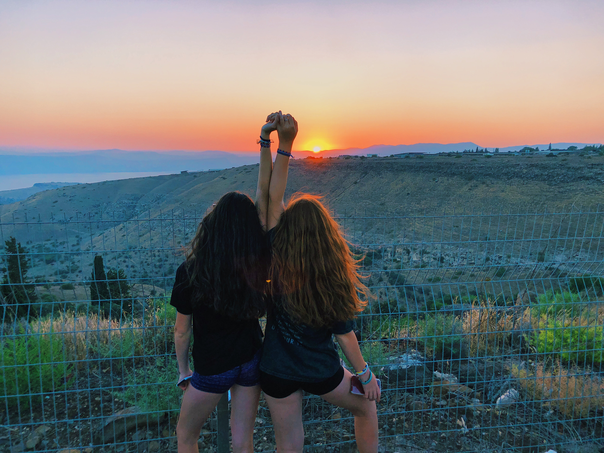

Hi and welcome to my travel blog! I'm Katie Radner, a sophomore at the University of Michigan. I am from Huntington Woods, Michigan. Here I will sahre all about my travels. I've been many places over seas, around the country, and even in my home state. Many of the places that I have traveled to were with my best friends from summer camp. We participated in a traveling program for teens during the summer of 2018. We went to Italy, Israel, and Slovenia on a five week trip. My mom and I have a passion for traveling and love traveling together even more. We have gone on many trips together that I will discuss on site. Throughout my travels, I have learned a lot about different practices and cultures, and I am so fortunate that I have been able to have had all of these experiences at a young age.
